JagoKasir adalah aplikasi Point of Sale (POS) offline-first yang dirancang untuk UMKM Indonesia. Cetak struk thermal, pantau stok barang, dan hitung laba bersih toko Anda tanpa koneksi internet.
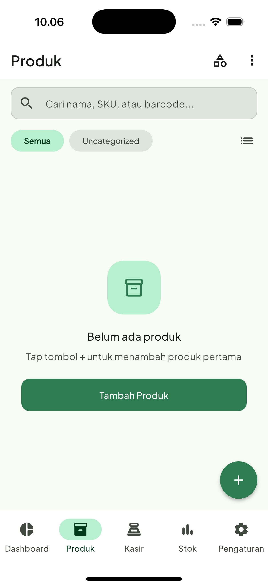
Dilengkapi dengan fitur kasir tingkat korporasi yang disederhanakan khusus untuk kelancaran bisnis toko Anda.
Transaksi super cepat tanpa bergantung pada kestabilan sinyal internet. Semua data penjualan tersimpan aman langsung di dalam memori penyimpanan perangkat Anda.
Hubungkan dengan printer thermal Bluetooth (ukuran kertas 58mm atau 80mm) atau printer WiFi. Kustomisasi logo, info toko, serta ucapan terima kasih pada struk belanja.
Pisahkan hak akses untuk Owner, Admin, dan Kasir. Tindakan penting seperti menghapus (void) transaksi atau mengekspor laporan keuangan hanya bisa disetujui oleh Owner/Admin.
Pantau sisa stok barang, sesuaikan stok masuk/keluar secara manual, dan dapatkan notifikasi otomatis untuk produk yang hampir habis agar pasokan selalu terjaga.
Lupakan perhitungan manual. Dashboard pintar menyajikan omzet, margin keuntungan kotor, laba bersih, serta grafik visual penjualan harian yang interaktif.
Jangan takut kehilangan data. Jadwalkan pencadangan database secara otomatis sebelum memori penuh. Restore data dari file backup dengan sekali ketukan.
Desain antarmuka (UI) minimalis dengan standar Material 3 yang intuitif, nyaman di mata, dan mudah dipahami oleh siapa saja.
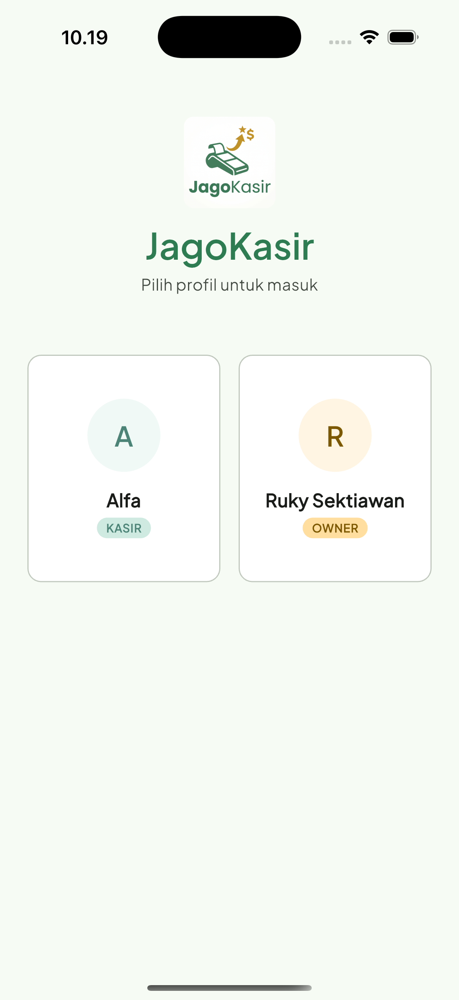
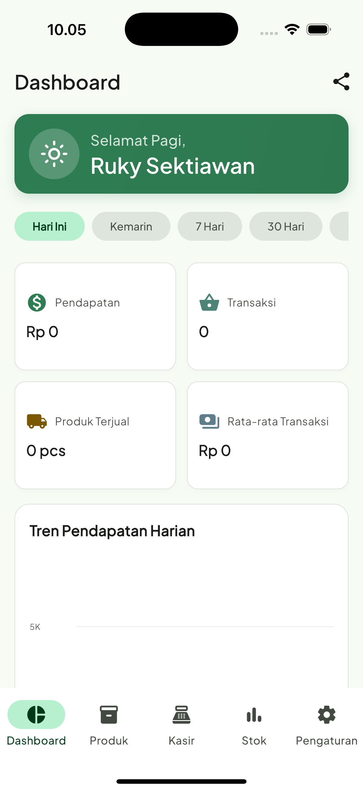
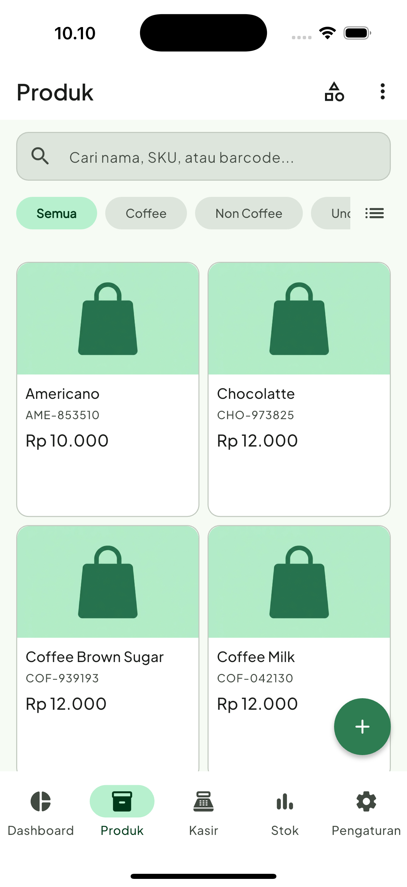
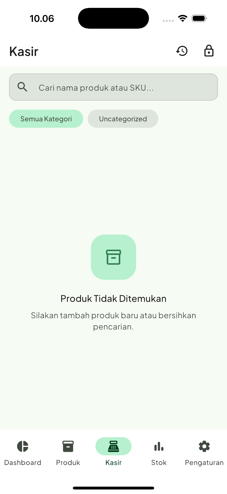
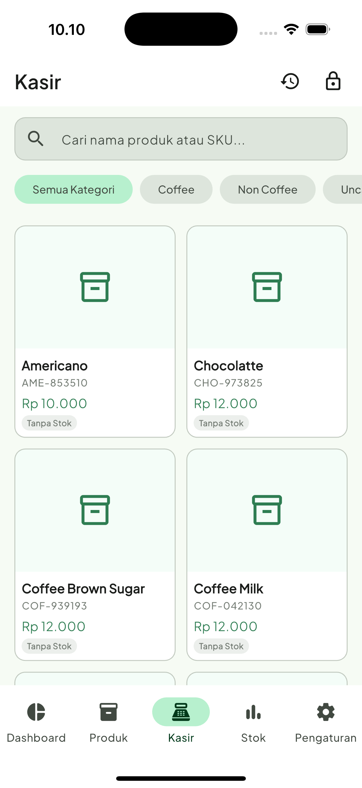
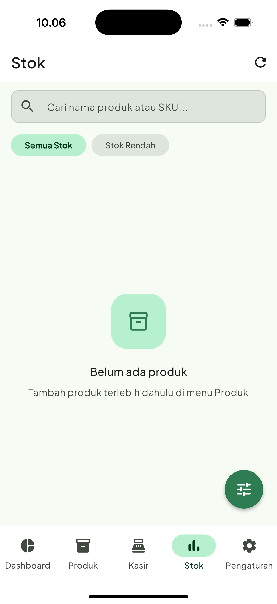
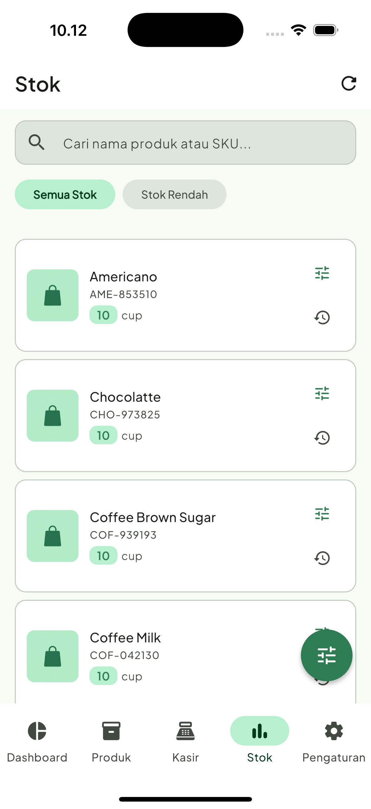
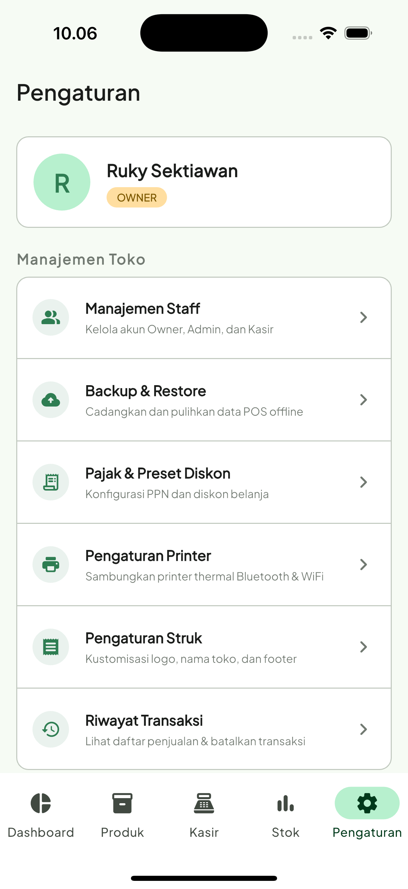
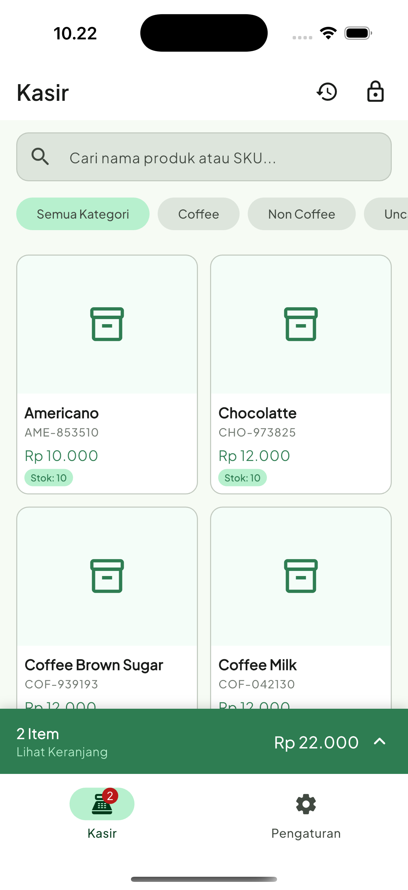
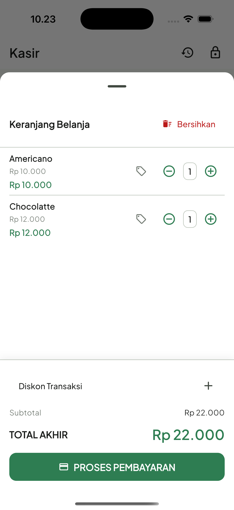
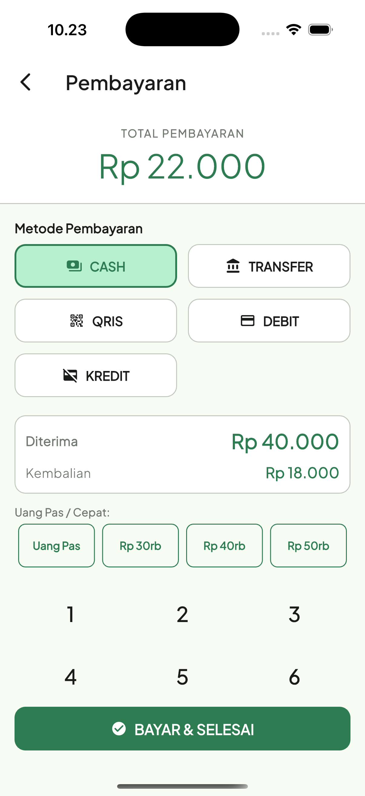
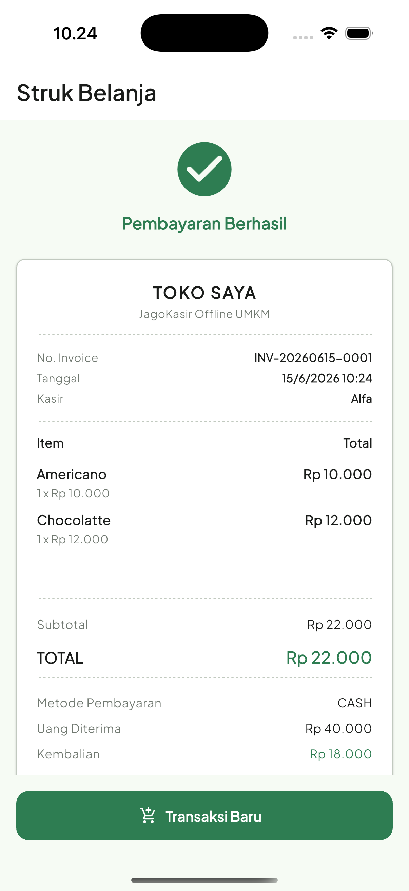
Dibangun menggunakan arsitektur software terstruktur untuk memberikan performa aplikasi yang ringan, stabil, dan andal.
Framework UI Multiplatform
State Management & DI
Local-first Relational Database
Grafik Penjualan Interaktif
Mulai digitalisasi kasir toko Anda hari ini tanpa pendaftaran akun dan tanpa biaya subscription tersembunyi.